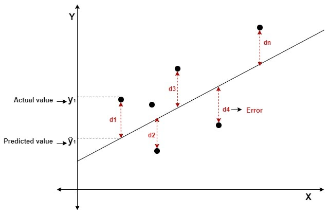

Use the sidebar to navigate to relevant sections. Additional notes and proofs are provided in the blue collapsible information sections - simply click them to open and close.
When to Use Multiple Linear Regression
Regressions are used to model the relationship between explanatory variables and a outcome variable.
The Multiple Linear Regression Model can be used with any type of explanatory variables. However, it is limited by the possible outcome variables.
The Multiple Linear Regression Model can be used when:
The Multiple Linear Regression Model should not be used when:
Model Specification
Take a set of observed data, with i=1,\dots,n number of observations, each with values (x_{1i}, \dots, x_{ki}, y_i).
The multiple linear regression model takes the following form:
E(y_i|\overrightarrow x_i) = \beta_0 + \beta_1 x_{1i} + \dots + \beta_k x_{ki}
- y is the outcome variable, and x_1, \dots, x_k are the explanatory variables.
- x_{1i}, \dots, x_{ki} are the observed values of the explanatory variables for observation i.
- E(y_i|\overrightarrow x_i) is the expectation of the conditional distribution of y given \overrightarrow x = (x_1, \dots x_k). Or in other words, it is the expected value of y given some values of x_1, \dots, x_k.
- \beta_0, \dots , \beta_k are coefficients that need to be estimated (based on our observed data) in order to produce the best-fit model.
The above form specifies the model in relation to E(y_i|\overrightarrow x_i), the conditional expectation. However, we can also specify a model in relation to y_i, the actual y value for each observation i in our observed data:
y_i = \beta_0 + \beta_1 x_{1i} + \dots + \beta_k x_{ki} + u_i
- y_i is the observed value of the outcome variable y for observation i.
- x_{1i}, \dots, x_{ki} are the observed values of the explanatory variables for observation i.
- \beta_0, \dots , \beta_k are coefficients that need to be estimated (based on our observed data) in order to produce the best-fit model (same as above).
- u_i is the error term. This represents the idea that not all observed values of y_i will be exactly on the expected value of the conditional distribution of y|x - the actual value of y_i will not always be the expected value of E(y_i). The expected value of the error term u should be E(u) = 0.
We can also specify this second model in terms of linear algebra as:
y = X \beta + u
- where vector y is equal to all the values of y for each observation i = 1, \dots, n: y = \begin{pmatrix}y_1 \\ y_2 \\ \vdots \\ y_n\end{pmatrix}
- where matrix X is equal to all the values of each x_1, \dots, x_k for each observation i = 1, \dots, n : X = \begin{bmatrix}1 & x_{21} & \dots & x_{k1} \\1 & x_{22} & \dots & x_{k2} \\\vdots & \vdots & \vdots & \vdots \\1 & x_{2n} & \dots & x_{kn}\end{bmatrix}
- Where the notation for elements of X is x_{ki}, with i being the unit of observation i = 1, \dots n, and k being the explanatory variables index.
- The first column of X is a vector of 1, which exists because these 1’s are multiplied with \beta_0 in our model (see below).
- Where vector \beta is a vector of all coefficients in the model: \beta = \begin{pmatrix}\beta_0 \\ \beta_1 \\ \vdots \\ \beta_k\end{pmatrix}
Start with the linear model written in terms of y_i:
y_i = \beta_0 + \beta_1x_{1i} + \dots + \beta_k x_{ki} + u_i
We can rewrite y_i to be equal to:
y_i = x_i'\beta + u_i, \text{ where }\beta = \begin{bmatrix}\beta_0 \\ \beta_1 \\ \vdots \\ \beta_k\end{bmatrix} \text{ and }x_i = \begin{bmatrix}1 \\x_{1i} \\\vdots \\x_{ki}\end{bmatrix}
- The x_i' in the equation is the transpose of x_i, to make matrix multiplication possible.
- The first element of the x_i matrix is 1, since 1 \times \beta_0 gives us the first parameter (intercept) in the linear model.
- Thus, when multiplying out, we get the same equation as the original multiple linear regression.
Note how we have the subscript i representing each individual observation. With a vector, we can expand out these subscripts.
- For example, instead of y_i, we could have a vector with y_1, y_2, \dots, y_n (assuming we have n observations).
- Same for x'_i, which can be expanded into a vector of x_1', x_2', \dots x_n', and for the error term u_i, which can be expanded into a vector of u_1, u_2, \dots, u_n.
Using this logic, we can obtain the following, with the x_i' and \beta being vectors within a vector:
\begin{split} \begin{pmatrix}y_1 \\ y_2 \\ \vdots \\ y_n\end{pmatrix} & = \begin{pmatrix}x_1'\beta + u_1 \\ x_2'\beta + u_2 \\ \vdots \\ x_n'\beta + u_n\end{pmatrix} \\ & \\ \begin{pmatrix}y_1 \\ y_2 \\ \vdots \\ y_n\end{pmatrix}& = \begin{pmatrix}x_1'\beta \\ x_2'\beta \\ \vdots \\ x_n'\beta\end{pmatrix} + \begin{pmatrix}u_1 \\ u_2 \\ \vdots \\ u_n\end{pmatrix} \end{split}
Since \beta vector appears as a common factor for all observations i=1,...,n, we can factor it out and have an equation:
\begin{pmatrix}y_1 \\ y_2 \\ \vdots \\ y_n\end{pmatrix} = \begin{pmatrix}x_1' \\ x_2' \\ \vdots \\ x_n'\end{pmatrix} \space \beta + \begin{pmatrix}u_1 \\ u_2 \\ \vdots \\ u_n\end{pmatrix}
We can expand the x_1',...,x_n' vector into a matrix. Remember that each x_1',...,x_n' is already a vector of different explanatory variables. So, we get the following result:
y = X \beta + u, \text{ where } X = \begin{bmatrix}1 & x_{21} & \dots & x_{k1} \\1 & x_{22} & \dots & x_{k2} \\\vdots & \vdots & \vdots & \vdots \\1 & x_{2n} & \dots & x_{kn}\end{bmatrix}
Model Estimation
Ordinary Least Squares Estimator
We need to estimate coefficients \beta_0, \dots, \beta_k to create a best-fit line (also called fitted values) in order to create a model for our observed data:
\widehat{y_i} = \widehat{\beta_0} + \widehat{\beta_1}x_{1i} + \dots + \widehat{\beta_k} x_{ki}
The most common estimation is to use the Ordinary Least Squares Estimator. This estimator estimates \beta_0, \dots, \beta_k by finding the values of \widehat{\beta_0}. \dots, \widehat{\beta_k} that minimise the sum of squared residuals (SSR):
\begin{split} SSR & = \sum\limits_{i=1}^n (y_i - \widehat{y_i})^2 \\ & = \sum\limits_{i=1}^n (y_i - (\widehat{\beta_0} + \widehat{\beta_1}x_{1i} + \dots + \widehat{\beta_k}x_{ki})) \\ & = \sum\limits_{i=1}^n (y_i - \widehat{\beta_0} - \widehat{\beta_1}x_{1i} - \dots - \widehat{\beta_k} x_{ki}) \end{split}
The residuals are the difference from our predicted best-fit line result \widehat{y_i}, and the actual value of y_i in the data. Below highlighted in red are the residuals.

After we have the residual values, we simply square each of them, then sum all of them together. That is the sum of squared residuals.
The residuals are squared because we care about the magnitude of errors, not the direction of error. For example, look at this figure:
Here, the residuals d1, d3, and dn are positive, but the residuals of d2 and d4 are negative. If we just add them together, the negative and positive residuals would cancel out. But by squaring them, we are measuring the magnitude, not the direction of error.
Then you might ask, why not absolute value them all?
- First of all, the absolute value function is not differentiable at its vertex, which makes finding a mathematical closed-form solution difficult.
- As we will also see in the interpretation section, the SSR minimisation condition also has several nice properties that make it better than alternatives.
This minimisation problem can be solved mathematically. Derivations are provided below:
Let us define the sum of squared residuals as function S. We want to minimise S, so we have to find the first order conditions and set them equal to 0.
First Order Conditions
First, let us find the partial derivative of S in respect to \hat\beta_0:
\frac{\partial S(\hat{\beta}_0, \hat{\beta}_1)}{\partial \hat{\beta}_0} = \frac{\partial }{\partial \hat{\beta}_0} \left[ \sum\limits_{i=1}^n (y_i - \hat{\beta}_0 - \hat{\beta}_1x_i)^2 \right]
First, ignore the summation. The partial derivative of the internal section, using chain rule, is the following:
\frac{\partial}{\partial \hat{\beta}_0} \left[ (y_i - \hat{\beta}_0 - \hat{\beta}_1 x_i)^2 \right] = -2(y_i - \hat{\beta}_0 - \hat{\beta}_1 x_i)
We know that there is the sum rule of derivatives [f(x) + g(x)]' = f'(x) + g'(x). Thus, we know we just sum up the individual derivatives to get the derivative of the sum:
\begin{split} \frac{\partial S(\hat{\beta}_0, \hat{\beta}_1)}{\partial \hat{\beta}_0} & = \sum\limits_{-i=1}^n \left[ -2(y_i - \hat{\beta}_0 - \hat{\beta}_1 x_i) \right] \\ & = -2 \sum\limits_{i=1}^n (y_i - \hat{\beta}_0 - \hat{\beta}_1 x_i) \end{split}
To find the value of \hat\beta_0 that minimises S, we set the derivative equal to 0. We can ignore the -2, since if the summation is equal to 0, the whole derivative will equal 0. Thus, the first order condition is:
\sum\limits_{i=1}^n (y_i - \hat{\beta}_0 - \hat{\beta}_1 x_i) = 0
Now, let us do the same for \hat\beta_1. Using the same steps as before
\begin{split} \frac{\partial S(\hat{\beta}_0, \hat{\beta}_1)}{\partial \hat{\beta}_1} & = \sum\limits_{i=1}^n \left[ -2x_i(y_i - \hat{\beta}_0 - \hat{\beta}_1 x_i) \right] \\ & = -2 \sum\limits_{i=1}^n x_i(y_i - \hat{\beta}_0 - \hat{\beta}_1 x_i) \end{split}
The first order condition for \hat\beta_1 will be (again, ignoring the -2 for the same reason as before):
\sum\limits_{i=1}^n x_i(y_i - \hat{\beta}_0 - \hat{\beta}_1 x_i) = 0
Thus, the first order conditions of OLS are:
\begin{split} & \sum\limits_{i=1}^n (y_i - \hat{\beta}_0 - \hat{\beta}_1 x_i) = 0 \\ & \sum\limits_{i=1}^n x_i (y_i - \hat{\beta}_0 - \hat{\beta}_1 x_i) = 0 \end{split}
Solving the System of Equations
We now have our two first-order conditions. Now, we have a 2-equation system of equations, with 2 variables.
First, let us solve the first equation for \hat\beta_0 in terms of \hat\beta_1:
\begin{split} \sum\limits_{i=1}^n (y_i - \hat{\beta}_0 - \hat{\beta}_1 x_i) & = 0 \\ \sum\limits_{i=1}^n y_i - n \hat{\beta}_0 - \hat{\beta}_1 \sum\limits_{i=1}^n x_i & = 0 \\ -n\hat{\beta}_0 &= -\sum\limits_{i=1}^n y_i + \hat{\beta}_1\sum\limits_{i=1}^nx_i \\ \hat\beta_0 & = \frac{1}{-n} \left( -\sum\limits_{i=1}^n y_i + \hat{\beta}_1\sum\limits_{i=1}^n x_i \right) \\ \hat{\beta}_0 & = \frac{1}{n} \sum\limits_{i=1}^n y_i - \frac{1}{n}\hat{\beta}_1 \sum\limits_{i=1}^n x_i \\ \hat\beta_0& = \bar{y} - \hat{\beta}_1 \bar{x} \end{split}
Now, let us substitute our calculated \hat{\beta}_0 = \bar{y} - \hat{\beta}_1 \bar{x} into the \hat{\beta}_1 condition and solve for \hat{\beta}_1:
\begin{split} 0 & =\sum\limits_{i=1}^n x_i (y_i - \hat{\beta}_0 - \hat{\beta}_1 x_i) \\ & = \sum\limits_{i=1}^n \left[ x_i(y_i - [\bar{y} - \hat{\beta}_1\bar{x}] - \hat{\beta}_1x_i) \right] \\ & = \sum\limits_{i=1}^n \left[ x_i(y_i - \bar{y} - \hat{\beta}_1 (x_i - \bar{x})) \right] \\ & = \sum\limits_{i=1}^n \left[ x_i(y_i - \bar{y}) - x_i \hat{\beta}_1(x_i - \bar{x}) \right] \\ & = \sum\limits_{i=1}^n x_i (y_i - \bar{y}) - \hat{\beta}_1 \sum\limits_{i=1}^nx_i (x_i - \bar{x}) \end{split}
Before we finish, here are a few key properties of summation
Property 1:
\sum\limits_{i=1}^n (x_i - \bar{x}) = 0
- This is because we can expand the left to \sum x_i - \sum \bar x.
- Then, we know \sum x_i = \sum \bar x (by the formula for mean), so \sum x_i - \sum \bar x = 0.
Property 2:
\sum\limits_{i=1}^n x_i(y_i - \bar{y}) = \sum\limits_{i=1}^n(x_i - \bar{x}) (y_i - \bar{y})
- This is because on the right side can expand to \sum [x_i(y_i - \bar y) - \bar x (y_i - \bar y)].
- Then, split into \sum x_i (y_i - \bar y) - \bar x \sum (y_i - \bar y).
- We know that by property 1 (which applies to any variable), \sum (y_i - \bar y) = 0. Thus, the right side disappears, and we are left with \sum x_i (y_i - \bar y).
Property 3:
\sum\limits_{i=1}^n x_i(x_i - \bar{x}) = \sum\limits_{i=1}^n(x_i - \bar{x})^2
- Start by expanding right side to \sum [ x_i ( x_i - \bar x) - \bar x (x_i - \bar x)]
- Which splits into \sum x_i (x_i - \bar x) - \bar x \sum (x_i - \bar x)
- By the first property, we know \sum x_i - \bar x = 0, so we are only left with \sum x_i (x_i - \bar x)
Knowing these properties of summation, we can transform what we had before:
\begin{split} 0 & = \sum\limits_{i=1}^n x_i (y_i - \bar{y}) - \hat{\beta}_1 \sum\limits_{i=1}^nx_i (x_i - \bar{x}) \\ 0 & = \sum\limits_{i=1}^n(x_i - \bar{x})(y_i - \bar{y}) - \hat{\beta}_1 \sum\limits_{i=1}^n (x_i - \bar{x})^2 \\ \hat{\beta}_1 \sum\limits_{i=1}^n (x_i - \bar{x})^2 & = \sum\limits_{i=1}^n(x_i - \bar{x})(y_i - \bar{y}) \\ \hat{\beta}_1 & = \frac{\sum_{i=1}^n (x_i - \bar{x})(y_i - \bar{y})}{\sum_{i=1}^n(x_i - \bar{x})^2} \end{split}
Note that the numerator is equivalent to the formula of covariance Cov(x,y), and the denominator is equal to the variance Var(x).
We found that \hat\beta_0 = \bar{y} - \hat{\beta}_1 \bar{x} earlier, so we just plug our solution of \hat\beta_1 in to get \hat\beta_0.
Similar to our simple linear regression (but with additional variables), our minimisation condition is:
\begin{split} (\hat{\beta}_0, \hat{\beta}_1, \hat{\beta}_2, ...) & = \min\limits_{(\hat{\beta}_0, \hat{\beta}_1, \hat{\beta}_2, ...)} (y_i - \hat{\beta}_0 - \hat{\beta}_1x_{1i} - \hat{\beta}_2x_{2i} ...)^2 \\ & = \min\limits_{(\hat{\beta}_0, \hat{\beta}_1, \hat{\beta}_2, ...)} S(\hat{\beta}_0, \hat{\beta}_1, \hat{\beta}_2, ...) \end{split}
Taking the partial derivatives of each parameter like in simple linear regression, we get first order conditions:
\begin{split}& \sum\limits_{i=1}^n (y_i - \hat{\beta}_0 - \hat{\beta}_1x_{1i} - \hat{\beta}_2x_{2i}...) = 0 \\& \sum\limits_{i=1}^n x_{1i}(y_i - \hat{\beta}_0 - \hat{\beta}_1x_{1i} - \hat{\beta}_2x_{2i}...) = 0 \\ & \sum\limits_{i=1}^n x_{2i} (y_i - \hat{\beta}_0 - \hat{\beta}_1x_{1i} - \hat{\beta}_2x_{2i}...) = 0 \end{split}
- and so on for x_{3i}, ..., x_{ki}.
This system of equations includes k+1 variables and k+1 equations, which is way too difficult to solve.
Instead, we can use linear algebra. Let us define our estimation vector \hat{\beta} as the value of \hat\beta that minimises the sum of squared errors:
\hat{\beta} = \min\limits_{b} (y - Xb)' (y - Xb) = \min\limits_b S(b)
- (y - Xb) is our error, since \hat y = Xb,
We can expand S(b) as follows:
\begin{split} S(b) & = y'y - b'X'y - y'Xb + b'X'Xb \\ & = y'y - 2b'X'y + b'X'Xb \end{split}
Taking the partial derivative in respect to b:
\frac{\partial S(b)}{\partial b} = \begin{pmatrix}\frac{\partial S(b)}{\partial b_1} \\\vdots \\\frac{\partial S(b)}{\partial b_k}\end{pmatrix}
Differentiating with the vector b yields:
\frac{\partial S(b)}{\partial b} = -2X'y + 2X'Xb
Evaluated at \hat{\beta}, the derivatives should equal zero (since first order condition of finding minimums):
\frac{\partial S(b)}{\partial b} \biggr|_{\hat{\beta}} = -2X'y + 2X'X \hat{\beta} = 0
When assuming X'X is invertable, we can isolate \hat{\beta} to find the solution to OLS:
\begin{split} -2X'y + 2X'X \hat{\beta} & = 0 \\ 2X'X\hat\beta & = 2X'y \\ \hat\beta & = (2X'X)^{-1} 2 X'y \\ \hat\beta & = (X'X)^{-1}X'y \end{split}
Properties of the OLS Estimator
The OLS Regression has a few useful properties that are outlined below:
Interpretation
Interpretation of Coefficients
Once we have estimated our coefficients model, we will have the following fitted-values model.
\widehat{y_i} = E(y_i|x_i)= \widehat{\beta_0} + \widehat{\beta_1}x_{1i} + \dots + \widehat{\beta_k} x_{ki}
The coefficient \widehat{\beta_0}, also called the intercept, is the expected value of y given all explanatory variables x_1, \dots, x_k = 0.
The coefficient \widehat{\beta_j} = \widehat{\beta_1}, \dots, \widehat{\beta_k} has an interpretation that depends on the type of variables y and x_j. =x_1, \dots, x_k are:
Model Summary Statistics
The Residual Standard Deviation \hat\sigma is the standard deviation of the residuals (also, the standard deviation of the conditional expectation distribution).
The formula for Residual Variance is given below (square root for standard deviation):
\hat\sigma^2 = \frac{\sum_{i=1}^n (y_i -\hat y_i)^2}{n-k-1}
- Larger values mean the observed values of y are more widely scattered around E(y|x).
- Smaller values mean the observed values of y are more tightly concentrated around E(y|x).
The R-squared Statistic, R^2, is a measure of the fit of our best-fit line.
- Interpreted as: The proportion of the total variance in y_i that is accounted for (or explained) by the explanatory variables in the model.
- R^2 is always between 0 and 1 (or 0% and 100%).
The formula for R^2 is:
R^2 = \frac{\sum_{i=1}^n(\widehat{y_i} - \bar y)^2}{\sum_{i=1}^n (y_i - \bar y)^2}
- The numerator is also called the explained sum of squares (SSE), the variation in y that is explained by our model.
- The denominator is called the total sum of squares (SST), the total variation in y.
For each observation, we know that the actual y_i value is the predicted \hat y_i plus the residual term \hat u_i. Thus:
y_i = \hat y_i + \hat u_i
Now, let us define these three concepts: the total sum of squares (SST), explained sum of squares (SSE), and residual sum of squares (SSR):
\begin{split} & SST = \sum\limits_{i=1}^n (y_i - \bar y)^2 \\ & SSE = \sum\limits_{i=1}^n (\hat y_i - \bar y)^2 \\ & SSR = \sum\limits_{i=1}^n (\hat u_i)^2 \end{split}
- The SST explains the total amount of variation in y
- The SSE is the amount of variation in y explained by our model
- The SSR is the amount of variation in y not explained by our model
Let us look at the total sum of squares (SST). We can manipulate it as follows:
\begin{split} SST & = \sum\limits_{i=1}^n (y_i - \bar y)^2 \\ & = \sum\limits_{i=1}^n(y_i - \hat y_i+ \hat y_i - \bar y)^2 \\ & = \sum\limits_{i=1}^n((y_i - \hat y_i)+ \hat y_i - \bar y)^2 \\ & = \sum\limits_{i=1}^n[\hat u_i + \hat y_i - \bar y]^2 \\ & = \sum\limits_{i=1}^n[\hat u_i^2 + \hat u_i \hat y_i - \hat u_i \bar y + \hat y_i \hat u_i + \hat y_i^2 - \hat y_i \bar y-\bar y \hat u_i -\bar y \hat y_i+\hat y^2_i] \\ & = \sum\limits_{i=1}^n[ \hat u_i^2 + 2 \hat u_i \hat y_i+ \hat y_i^2 - 2 \hat u_i \bar y - 2 \hat y_i \bar y + \bar y ^2] \end{split}
By a property of linear regression, \sum \hat y_i \hat u_i = 0. Knowing this, we can further simplify to:
\begin{split} SST & = \sum\limits_{i=1}^n[ \hat u_i^2 + \hat y_i^2 - 2 \hat u_i \bar y - 2 \hat y_i \bar y + \bar y ^2] \\ & = \sum\limits_{i=1}^n[\hat u_i^2 + (\hat y_i - \bar y)^2]\\ & = \sum\limits_{i=1}^n \hat u_i^2 + \sum\limits_{i=1}^n(\hat y_i - \bar y)^2 \\ & = SSE + SSR \end{split}
This makes sense: After all, SSE is the squared errors explained by the model, and SSR is the residual (non-explained) parts of the model, so together, they should be equal to the total sum of squares.
Thus, SSE/SST should be a percentage between 0 and 100, and 1 - SSR/SST should also be equivalent to that.
Assumptions
Assumptions for Unbiasedness
Unbiasedness means the expected value of our estimate from our population is equal to the true population value. In other words, E(\hat\theta) = \theta.
The OLS estimate of \widehat{\beta_j} (the relationship between x_j and y) is only unbiased if these 4 conditions are met:
If all 4 conditions are met, The OLS estimate of \widehat{\beta_j} (the relationship between x_j and y) is unbiased.
We want to show E(\hat\beta_1) = \beta_1. Let us start off with the OLS estimator:
\hat{\beta}_1 = \frac{\sum_{i=1}^n (x_i - \bar{x})(y_i - \bar{y})}{\sum_{i=1}^n(x_i - \bar{x})^2}
The existence of \hat{\beta}_1 is guaranteed by SLR.3 Var(x) ≠ 0, since we cannot divide by 0.
Before we start, here are a few key properties of summation
Property 1:
\sum\limits_{i=1}^n (x_i - \bar{x}) = 0
- This is because we can expand the left to \sum x_i - \sum \bar x.
- Then, we know \sum x_i = \sum \bar x (by the formula for mean), so \sum x_i - \sum \bar x = 0.
Property 2:
\sum\limits_{i=1}^n x_i(y_i - \bar{y}) = \sum\limits_{i=1}^n(x_i - \bar{x}) (y_i - \bar{y})
- This is because on the right side can expand to \sum [x_i(y_i - \bar y) - \bar x (y_i - \bar y)].
- Then, split into \sum x_i (y_i - \bar y) - \bar x \sum (y_i - \bar y).
- We know that by property 1 (which applies to any variable), \sum (y_i - \bar y) = 0. Thus, the right side disappears, and we are left with \sum x_i (y_i - \bar y).
Property 3:
\sum\limits_{i=1}^n x_i(x_i - \bar{x}) = \sum\limits_{i=1}^n(x_i - \bar{x})^2
- Start by expanding right side to \sum [ x_i ( x_i - \bar x) - \bar x (x_i - \bar x)]
- Which splits into \sum x_i (x_i - \bar x) - \bar x \sum (x_i - \bar x)
- By the first property, we know \sum x_i - \bar x = 0, so we are only left with \sum x_i (x_i - \bar x)
Let us look at the numerator. Let us expand the numerator:
\begin{split} & \sum\limits_{i=1}^n (x_i - \bar{x})(y_i - \bar{y}) \\ = & \sum\limits_{i=1}^n [(x_i - \bar x)y_i - (x_i - \bar x) \bar y] \\ = & \sum\limits_{i=1}^n(x_i - \bar x)y_i - \sum\limits_{i=1}^n (x_i - \bar x) \bar y \\ = & \sum\limits_{i=1}^n(x_i - \bar x)y_i - \bar y\sum\limits_{i=1}^n (x_i - \bar x) \\ \end{split}
We know that \sum (x_i - \bar x) = 0 (from the properties above). Thus, we can further simplify to:
\begin{split} = & \sum\limits_{i=1}^n(x_i - \bar x)y_i - \bar y\sum\limits_{i=1}^n (x_i - \bar x) \\ = & \sum\limits_{i=1}^n(x_i - \bar x)y_i - \bar y(0) \\ = & \sum\limits_{i=1}^n(x_i - \bar x)y_i \end{split}
Now, let us play with the numerator more (note the properties of summation introduced earlier):
\begin{split} & = \sum\limits_{i=1}^n (x_i - \bar{x})y_i \\ & = \sum\limits_{i=1}^n(x_i - \bar{x})(\beta_0 + \beta_1 x_i + u_i) \\ & = \sum\limits_{i=1}^n(x_i - \bar{x}) \beta_0 + \sum\limits_{i=1}^n(x_i - \bar{x}) \beta_1 x_i + \sum\limits_{i=1}^n (x_i - \bar{x}) u_i \\ & = \beta_0 \sum\limits_{i=1}^n(x_i - \bar{x}) + \beta_1 \sum\limits_{i=1}^n(x_i - \bar{x}) x_i + \sum\limits_{i=1}^n (x_i - \bar{x}) u_i \\ & = 0 + \beta_1 \sum\limits_{i=1}^n(x_i - \bar{x})^2 + \sum\limits_{i=1}^n(x_i - \bar{x})u_i\end{split}
Now, putting the numerator back into the equation, we simplify:
\begin{split} \hat{\beta}_1 & = \frac{\beta_1 \sum_{i=1}^n(x_i - \bar{x})^2 + \sum_{i=1}^n(x_i - \bar{x})u_i}{\sum_{i=1}^n(x_i - \bar{x})^2} \\ & = \beta_1 + \frac{\sum_{i=1}^n(x_i - \bar{x}) u_i}{\sum_{i=1}^n (x_i - \bar{x})^2} \\ & = \beta_1 + \sum\limits_{i=1}^n w_i u_i \end{split}
- Where w_i = \frac{x_i - \bar{x}}{\sum (x_i - \bar{x})^2}, which is a function of random variable x. We could also write w_i as \frac{x_i - \bar{x}}{SST_x} (where SST_x is total sum of squares for x).
Since w_i is a function of x, that means \hat\beta_1 is also a function of x (depends on the value of x).
Now we need to find the expectation E(\hat\beta_1). Thus, we have this equation:
\begin{split} E(\hat\beta_1|x) & = E \left( \beta_1 + \sum\limits_{i=1}^n w_i u_i \bigg| x \right) \\ & = \beta_1 + \sum\limits_{i=1}^nE(w_iu_i|x) \end{split}
But what does \sum E(w_iu_i |x) equal? This is where our other two Gauss-Markov Conditions come into play.
The Zero-Conditional Mean assumption says E(u|x) = 0.
Random sampling, combined with zero-conditional mean, allows us to say:
E(u|x) = E(u_i | x_i) = E(u_i|x) = 0
This means that:
E(w_i u_i|x) = w_i E(u_i|x) = 0
Now knowing what E(w_iu_i|x) is, let us plug it back into our equation:
\begin{split} E(\hat\beta_1|x) & = \beta_1 + \sum\limits_{i=1}^nE(w_iu_i|x) \\ & = \beta_1 + \sum\limits_{i=1}^n0 \\ & = \beta_1 \end{split}
However, we have solved for E(\hat\beta_1 |x), and not E (\hat\beta_1). This is where the Law of Iterated Expectation. The law says the following:
E(x) = E[E(x|y)]
Thus, we can use this to conclude the proof:
\begin{split} E(\hat\beta_1) & = E[E(\hat\beta_1|x)] \\ & = E(\beta_1) \\ & = \beta_1 \end{split}
- Since \beta_1 is the true value (a constant), its expectation is itself
Thus, E(\hat\beta_1) = \beta_1, proving the unbiasedness of OLS under the 4 conditions.
For simplicity, let us focus on \hat\beta_1. However, this can be generalised to any \hat\beta_2, \dots, \hat\beta_k.
Recall the regression anatomy solution of OLS for \hat\beta_1:
\hat\beta_1 = \frac{\sum_{i=1}^n \widetilde{r_{1i}} \ y_i}{\sum_{i=1}^n \widetilde{r_{1i}}^2}
- Where \widetilde{r_{1i}} is the part of x_1 uncorrelated with x_2, \dots, x_k.
The existence of \hat\beta_1 is guaranteed by MLR.3 \sum\widetilde{r_{1i}}^2 ≠ 0, since we cannot divide by 0.
Now, let us plug in y_i = \beta_0 + \beta_1 x_{1i} + \dots + \beta_k x_{ki} + u_i into our regression anatomy formula:
\begin{split} \hat\beta_1 & = \frac{\sum_{i=1}^n \widetilde{r_{1i}} \ y_i}{\sum_{i=1}^n \widetilde{r_{1i}}^2} \\ & = \frac{\sum_{i=1}^n \widetilde{r_{1i}} \ (\beta_0 + \beta_1 x_{1i} + \dots + \beta_k x_{ki} + u_i)}{\sum_{i=1}^n \widetilde{r_{1i}}^2} \\ \end{split}
Before we start, here are a few key properties of summation
Property 1:
\sum\limits_{i=1}^n \widetilde{r_{1i}} = 0
- This is because \widetilde{r_{1i}} is a residual term of a OLS regression of outcome x_1 and explanatory variables x_2, \dots, x_k, and we know OLS residuals sum to 0.
Property 2:
\sum\limits_{i=1}^n \widetilde{r_{1i}} x_{ji} = 0, \text{ given } j=2, \dots, k
- Because for OLS, \sum x_i \hat u_i = 0, and we know \widetilde{r_{1i}} is the residual \hat u_i in a regression with explanatory variables x_2, \dots, x_k and outcome variable x_1.
Property 3:
\sum\limits_{i=1}^n \widetilde{r_{1i}} x_{1i} = \sum\limits_{i=1}^n \widetilde{r_{1i}}(\hat x_{1i} + \sum\limits_{i=1}^n \widetilde{r_{1i}}) = \sum\limits_{i=1}^n \widetilde{r_{1i}}^2
- Because we have the regression fitted values \hat x_{1i} = \hat \gamma_0 + \hat\gamma_1 x_2 + \dots + \hat\gamma_{k-1} x_{k} + \widetilde{r_{1i}} from regression anatomy.
- And we know with regression, actual values are the predicted plus residual: y_i = \hat y_i + \hat u_i. Thus, x_i = \hat x_i + \widetilde{r_{1i}}.
Now, focusing on the numerator, and using the summation properties above, let us simplify:
\begin{split} & \sum\limits_{i=1}^n \widetilde{r_{1i}} \ (\beta_0 + \beta_1 x_{1i} + \dots + \beta_k x_{ki} + u_i) \\ & = \sum\limits_{i=1}^n (\widetilde{r_{1i}}\beta_0 + \widetilde{r_{1i}}\beta_1x_{1i} + \dots + \widetilde{r_{1i}}\beta_k x_{ki} + \widetilde{r_{1i}} u_i) \\ & = \sum\limits_{i=1}^n \widetilde{r_{1i}}\beta_0 + \sum\limits_{i=1}^n \widetilde{r_{1i}}\beta_1 x_{1i} + \dots + \sum\limits_{i=1}^n \widetilde{r_{1i}}\beta_k x_{ki} + \sum\limits_{i=1}^n \widetilde{r_{1i}} u_i \\ & = \beta_0 \sum\limits_{i=1}^n \widetilde{r_{1i}} + \beta_1 \sum\limits_{i=1}^n \widetilde{r_{1i}} x_{1i} + \dots + \beta_k \sum\limits_{i=1}^n \widetilde{r_{1i}} x_{ki} + \sum\limits_{i=1}^n \widetilde{r_{1i}} u_i \\ & = \beta_0 (0) + \beta_1 \sum\limits_{i=1}^n \widetilde{r_{1i}}^2 + \beta_2 (0) + \dots + \beta_k (0) + \sum\limits_{i=1}^n \widetilde{r_{1i}} u_i \\ & = \beta_1 \sum\limits_{i=1}^n \widetilde{r_{1i}}^2 + \sum\limits_{i=1}^n \widetilde{r_{1i}} u_i \end{split}
Now, putting the numerator back in, we can simplify:
\begin{split} \hat\beta_1 & = \frac{\beta_1 \sum_{i=1}^n \widetilde{r_{1i}}^2 + \sum_{i=1}^n \widetilde{r_{1i}} u_i}{\sum_{i=1}^n \widetilde{r_{1i}}^2} \\ & \\ & = \frac{\beta_1 \sum_{i=1}^n \widetilde{r_{1i}}^2}{\sum_{i=1}^n \widetilde{r_{1i}}^2} + \frac{\sum_{i=1}^n \widetilde{r_{1i}} u_i}{\sum_{i=1}^n \widetilde{r_{1i}}^2} \\ & \\ & = \beta_1 + \frac{\sum_{i=1}^n \widetilde{r_{1i}} u_i}{\sum_{i=1}^n \widetilde{r_{1i}}^2} \end{split}
Now, we want to find E(\hat\beta_1). Note that the second part of the equation is a function of u_i, of which itself is a function of all explanatory variables x_{1i}, \dots, x_{ki}. Thus, we know:
\begin{split} E(\hat\beta_1 | x_{1i}, \dots x_{ki}) & = \beta_1 + E\left( \frac{\sum_{i=1}^n \widetilde{r_{1i}} u_i}{\sum_{i=1}^n \widetilde{r_{1i}}^2} \biggr|x_{1i},\dots, x_{ki} \right) \\ & = \beta_1 + \frac{\sum_{i=1}^n \widetilde{r_{1i}} \ E(u_i|x_{1i}, \dots,x_{ki})}{\sum_{i=1}^n \widetilde{r_{1i}}^2} \end{split}
But what is E(u_i|x_{1i}, \dots , x_{ki})? We can use two Gauss-Markov conditions to evaluate this.
The Zero-Conditional Mean assumption says E(u|x_1, \dots, x_k) = 0.
Random sampling, combined with Zero-Conditional Mean, allows us to say:
E(u|x_1, \dots, x_k)=E(u_1|x_{1i}, \dots, x_{ki}) = 0
Thus, plugging that in to our formula, we get:
\begin{split} E(\hat\beta_1 | x_{1i}, \dots x_{ki}) & = \beta_1 + \frac{\sum_{i=1}^n \widetilde{r_{1i}} \ E(u_i|x_{1i}, \dots,x_{ki})}{\sum_{i=1}^n \widetilde{r_{1i}}^2} \\ & = \beta_1 + \frac{\sum_{i=1}^n \widetilde{r_{1i}} \ (0)}{\sum_{i=1}^n \widetilde{r_{1i}}^2} \\ & = \beta_1 + 0 \\ & = \beta_1 \end{split}
Now, just like in simple linear regression, we use the law of iterated expectations to conclude this proof:
\begin{split} E(\hat\beta_1) & = E[E(\hat\beta_1|x_{1i}, \dots, x_{ki})] \\ & = E(\beta_1) \\ & = \beta_1 \end{split}
Thus, OLS is unbiased under these 4 conditions
Assumptions for Consistency
Asymptotic consistency of an estimator is when we increase sample size n \rightarrow ∞, the estimator should converge around the true population value.
An estimator is consistent, if as we increase sample size towards infinity, the estimate will become more and more concentrated around the true population value \theta.
Or in other words, as sample size increases indefinitely, we will get closer and closer to the true population value \theta, until at infinite sample size, all our estimates will be exactly \theta.
Mathematically:
Pr(|\hat\theta_n - \theta|> \epsilon) \rightarrow 0, \text { as } n \rightarrow ∞
- Or in other words, the proabability that the distance between an estimate \hat\theta_n and the true population value \theta will be higher than a small close-to-zero value \epsilon will be 0, since our estimates \hat\theta_n will converge at the \theta.
An estimator can be both biased, but consistent.
- i.e. in smaller sample sizes, the estimator might not be on average correct, but over a large enough sample size, it will become “unbiased”.
The assumptions for the asymptotic consistency of the OLS estimate of \widehat{\beta_1} are very similar to the assumptions for unbiasedness, but with assumption MLR.4 weakened to MLR.4’:
If these 4 conditions are met, OLS is Asymptotically consistent.
Before we start, here are a few key properties of summation
Property 1:
\sum\limits_{i=1}^n (x_i - \bar{x}) = 0
- This is because we can expand the left to \sum x_i - \sum \bar x.
- Then, we know \sum x_i = \sum \bar x (by the formula for mean), so \sum x_i - \sum \bar x = 0.
Property 2:
\sum\limits_{i=1}^n x_i(y_i - \bar{y}) = \sum\limits_{i=1}^n(x_i - \bar{x}) (y_i - \bar{y})
- This is because on the right side can expand to \sum [x_i(y_i - \bar y) - \bar x (y_i - \bar y)].
- Then, split into \sum x_i (y_i - \bar y) - \bar x \sum (y_i - \bar y).
- We know that by property 1 (which applies to any variable), \sum (y_i - \bar y) = 0. Thus, the right side disappears, and we are left with \sum x_i (y_i - \bar y).
Property 3:
\sum\limits_{i=1}^n x_i(x_i - \bar{x}) = \sum\limits_{i=1}^n(x_i - \bar{x})^2
- Start by expanding right side to \sum [ x_i ( x_i - \bar x) - \bar x (x_i - \bar x)]
- Which splits into \sum x_i (x_i - \bar x) - \bar x \sum (x_i - \bar x)
- By the first property, we know \sum x_i - \bar x = 0, so we are only left with \sum x_i (x_i - \bar x)
Let us look at the numerator. Let us expand the numerator:
\begin{split} & \sum\limits_{i=1}^n (x_i - \bar{x})(y_i - \bar{y}) \\ = & \sum\limits_{i=1}^n [(x_i - \bar x)y_i - (x_i - \bar x) \bar y] \\ = & \sum\limits_{i=1}^n(x_i - \bar x)y_i - \sum\limits_{i=1}^n (x_i - \bar x) \bar y \\ = & \sum\limits_{i=1}^n(x_i - \bar x)y_i - \bar y\sum\limits_{i=1}^n (x_i - \bar x) \\ \end{split}
We know that \sum (x_i - \bar x) = 0 (from the properties above). Thus, we can further simplify to:
\begin{split} = & \sum\limits_{i=1}^n(x_i - \bar x)y_i - \bar y\sum\limits_{i=1}^n (x_i - \bar x) \\ = & \sum\limits_{i=1}^n(x_i - \bar x)y_i - \bar y(0) \\ = & \sum\limits_{i=1}^n(x_i - \bar x)y_i \end{split}
Now, let us play with the numerator more (note the properties of summation introduced earlier):
\begin{split} & = \sum\limits_{i=1}^n (x_i - \bar{x})y_i \\ & = \sum\limits_{i=1}^n(x_i - \bar{x})(\beta_0 + \beta_1 x_i + u_i) \\ & = \sum\limits_{i=1}^n(x_i - \bar{x}) \beta_0 + \sum\limits_{i=1}^n(x_i - \bar{x}) \beta_1 x_i + \sum\limits_{i=1}^n (x_i - \bar{x}) u_i \\ & = \beta_0 \sum\limits_{i=1}^n(x_i - \bar{x}) + \beta_1 \sum\limits_{i=1}^n(x_i - \bar{x}) x_i + \sum\limits_{i=1}^n (x_i - \bar{x}) u_i \\ & = 0 + \beta_1 \sum\limits_{i=1}^n(x_i - \bar{x})^2 + \sum\limits_{i=1}^n(x_i - \bar{x})u_i\end{split}
Now, putting the numerator back into the equation, we simplify:
\begin{split} \hat{\beta}_1 & = \frac{\beta_1 \sum_{i=1}^n(x_i - \bar{x})^2 + \sum_{i=1}^n(x_i - \bar{x})u_i}{\sum_{i=1}^n(x_i - \bar{x})^2} \\ & = \beta_1 + \frac{\sum_{i=1}^n(x_i - \bar{x}) u_i}{\sum_{i=1}^n (x_i - \bar{x})^2} \end{split}
We can add \frac{1}{n} (or n^{-1}) to the top and bottom of the fraction (which cancel each other out, keeping the equation equivalent):
\hat\beta_1= \beta_1 + \frac{n^{-1} \sum_{i=1}^n(x_i - \bar{x}) u_i}{n^{-1} \sum_{i=1}^n (x_i - \bar{x})^2}
Now, let us expand the numerator, and simplify, and we get:
\begin{split} \hat\beta_1 & = \beta_1 + \frac{n^{-1} \sum_{i=1}^n x_i u_i - n^{-1} \sum_{i=1}^n \bar x u_i}{n^{-1} \sum_{i=1}^n (x_i - \bar{x})^2} \\ & = \beta_1 + \frac{n^{-1} \sum_{i=1}^n x_i u_i - \bar x \ n^{-1} \sum_{i=1}^n u_i}{n^{-1} \sum_{i=1}^n (x_i - \bar{x})^2} \\ & = \beta_1 + \frac{ \overline{xu} - \bar x \bar u}{S.Var(x)} \end{split}
- Where S.Var(x) is the sample variance of x.
We want to find \text{plim}(\hat\beta_1). We will need a few properties for this:
We know these general rules about probability limits:
\begin{split} & \text{plim}(\bar x_n) = \mu _x \\ & \text{plim}(S.Var(x_i)) = Var(x_i) \\ & \text{plim}(S.Cov(x_i, y_i)) = Cov (x_i, y_i) \end{split}
The other properties are about algebra with probability limits. Assume \text{plim} (u_n) = a, and \text{plim}(v_n) = b. Then, the following are true:
\begin{split} & \text{plim} (u_n + v_n) = a + b \\ & \text{plim} (u_n v_n) = ab \\ & \text{plim} (u_n v_n) = a/b \end{split}
Knowing this, we then know that:
\begin{split} \text{plim}(\hat\beta_1) & = \beta_1 + \frac{ \text{plim}(\overline{xu}) - \text{plim}( \bar x \bar u) }{ \text{plim}(S.Var(x))} \\ & = \beta_1 + \frac{ \text{plim}(\overline{xu}) - \text{plim}(\bar x) \text{plim}(\bar u) }{ \text{plim}(S.Var(x))} \\ & = \beta_1 + \frac{ E(xu) - E(x) E(u) }{Var(x)} \\ \end{split}
The weakened Zero-Mean and Exogeneity assumption states:
\begin{split} & E(u) = 0 \\ & E(xu) = 0 \end{split}
Using this assumption, we can conclude the proof:
\begin{split} \text{plim}(\hat\beta_1) & = \beta_1 + \frac{ E(xu) - E(x) E(u) }{Var(x)} \\ & = \beta_1 + \frac{ 0 - E(x)0}{Var(x)} \\ & = \beta_1 + \frac{ 0 }{Var(x)} \\ & = \beta_1+0 \\ \text{plim}(\hat\beta_1) & = \beta_1 \end{split}
Thus, OLS is asymptotically consistent under a weakened version of MLR.4 Zero-Conditional Mean - called the Zero-Mean and Exogeneity Assumption.
- Under this weakened assumption (without meeting the full MLR.4 assumption), OLS is biased but consistent.
The key assumption is Exogeneity - that no explanatory variable is correlated with the error term. If exogeneity is violated, this is often caused by omitted variable bias.
Consider two regressions. The first regression, the “short” regression, is a simple linear regression with only explanatory variable x. The second regression, the “long” regression, contains an extra variable z that is omitted from the first regression:
\begin{split}y_i & = \beta_0^S + \beta_1^Sx_i + u_i^S \quad \text{short} \\y_i & = \beta_0 + \beta_1x_i + \beta_2z_i + u_i \quad \text{long}\end{split}
- Note: the S in \beta_0^S is a subscript representing short. It is not an exponent.
Now consider an auxiliary regression, where the omitted variable z is the outcome variable, and x is the explanatory variable:
z_i = \delta_0 + \delta_1 x_i + v_i
- where \delta_0, \delta_1 are coefficients and v_i is the error term
Now we have z in terms of x, let us plug z into our long regression to “recreate” the short regression:
\begin{split}y_i & = \beta_0 + \beta_1x_i + \beta_2z_i + u_i \\y_i & = \beta_0 + \beta_1 x_i + \beta_2(\delta_0 + \delta_1x_i + v_i) + u_i \\y_i & = \beta_0 + \beta_1 x_i + \beta_2 \delta_0 + \beta_2 \delta_1 x_i + \beta_2v_i + u_i \\y_i & = \beta_0 + \beta_2 \delta_0 + (\beta_1 + \beta_2 \delta_1)x_i + \beta_2v_i + u_i\end{split}
We have “recreated” the short regression with one variable x. Let us see our recreation next to the original short regression:
\begin{split} y_i & = \beta_0^S + \beta_1^Sx_i + u_i^S \\ y_i & = \beta_0 + \beta_2 \delta_0 + (\beta_1 + \beta_2 \delta_1)x_i + \beta_2v_i + u_i \end{split}
- The short regression coefficient \beta_0^S is analogous to the \beta_0 + \beta_2 \delta_0 in the recreation (both are the intercepts)
- The short regression coefficient \beta_1^S x_i is analogous to the (\beta_1 + \beta_2 \delta_1)x_i in the recreation (both are the slope and variable of interest)
- The short regression u_i^S is analogous to the \beta_2 v_i + u_i in the recreation (both are the error terms).
Since the short regression \beta_1^S x_i is analogous to the (\beta_1 + \beta_2 \delta_1)x_i in the recreation, that means coefficient \beta_1^S = \beta_1 + \beta_2 \delta_1.
Thus, the difference between the short regression (simple linear regression) coefficient \beta_1^S, and the original long regression coefficient \beta_1, is \beta_2 \delta_1.
- If \beta_2 = 0 (meaning no relationship between omitted x and y), or \delta_1 = 0 (meaning no relationship between omitted x and x), then difference \beta_2 \delta_1 = 0, thus there is no difference.
- But if either of those facts are not true, then \beta_2 \delta_1 ≠ 0, and there is a difference between \beta_1^S and \beta_1.
More intuitively, if the omitted variable z is both correlated with x and y, then the two coefficients are different by \beta_2 \delta_1.
- Any variable z correlated both with x and y is called a confounding variable.
- This \beta_2 \delta_1 amount is called the omitted variable bias.
Statistical Inference
The standard errors of OLS estimates quantify how precise our estimates are:
We can mathematically derive standard errors as shown below:
Using standard errors, we can conduct hypothesis testing: